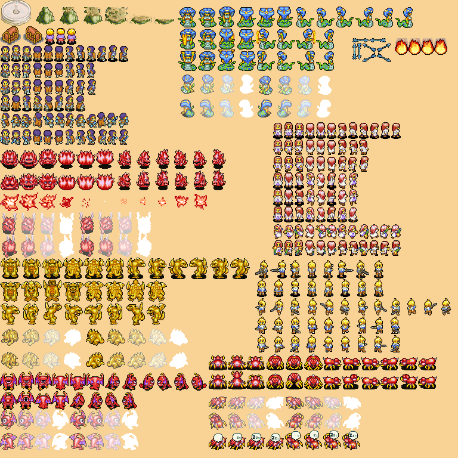

Lluís Moreu Farran

-
Role: Manager
-
Age: 20 y.o.
-
From: Lleida
-
Github: youis11
-
Contact: lluis.moreu@gmail.com
My work
Even if I'm the manager we could say that my work has been divided into 3 facets: Management, Artist and Team Visualization. Without forgetting that
at first I had a coding mini-task.
First of all, the most important part has been the team management that started by announcing a couple of meetings with the team to establish the
game idea and make clear the features of it in the
Game Design Document .
Once we had clear the features I divided them into 10 sprints of about 1 week each. The most difficult task was to take into account the other subjects of
the course, although after all I think it has turned out quite well. In addition, the fact that the team worked so well made it necessary to advance
many features.
With these defined sprints I made a Production Plan ,
in the Pre-Production phase of this project, in which a calendar of the sprints and the milestones was made. Also, sprints and postmortems were defined,
these last carried out in the team meetings. In addition, a Risks & Contingency Plan, a Gantt Chart, a Log of Sprints and a Log of average estimation
deviation were made. Finally, the List Version
has been updated every week based on the results of the Sprint.
As a manager, another important task I had was to have the necessary resources for the team, be it the reservation of study rooms for meetings and
reserves of controls and headphones for the tests of the previous day of delivery, together with the reserves of the hours before the deliveries to be able
to rehearse the presentations. Also, any doubt that the team had regarding the deliveries I was in charge of ask them to the Publisher.
Finally, apart from announcing and reminding the team of team meetings, I was in charge of updating the Sprint Backlog in the
Trello of the project and, with the help of my teammates, the rest of the
lists.
The second facet of my work and one of the most important for the mere fact that I was the only one able and available for it was to create art for the
game as a second artist. The main task of this was to create the 4 remaining sprites out of the 8 directions that the sprites must have in our game, but
I also created some other assets.
An example of how my work as an artist has been is the following image:
In this image we can see the dragon boss of the last level of the game, the frames that have pink as background are original sprites of the Final
Fantasy Tactics Advance and the other frames are the work that I had to do, it used to consist of animation of movement, attack and death.
For the main characters I also had to do the abilities.
Although I didn't make the main animations of this character, the other two I did, I did his main and third abilities. With the other characters I
made the fireball and the arrow in addition to his third ability as well.
If we talk about assets I made the animation of the rocks, where from it my partner could make the other destruction animations, I also made the chest,
but my partner enlarged it, and finally I drew the empty fountain.
Finally, here is all my work in a single image.

You can also find it at:
As I've said before, I programmed a little before I became a second artist. My task was to make the options menu with all its functionality, including
retouching the
audio module by adding volume control functions and adding the
checkbox as an UI element. Also, another thing I did was to stylize the controls menu.
Finally, my last facet has been Team Visualization. This includes maintaining the account of Twitter
more or less active, making the presentations for the deliveries (
example) and make this website in this repository from 0 learning html and css.
{kind=link}
{kind=link}
{kind=link}
{kind=link}
{kind=link}
{kind=link}
{kind=link}
{kind=link}
{kind=link}
{kind=link}
{kind=link}